1. 函数的理解
1.1 什么是函数
函数在计算机语言的使用中贯穿始终，函数的作用是什么呢？它可以把我们经常使用的代码封装起来， 需要的时候直接调用即可。这样既 提高了代码效率 ，又 提高了可维护性 。在 SQL 中我们也可以使用函数 对检索出来的数据进行函数操作。使用这些函数，可以极大地 提高用户对数据库的管理效率 。
从函数定义的角度出发，我们可以将函数分成 内置函数 和 自定义函数 。在 SQL 语言中，同样也包括了 内置函数和自定义函数。内置函数是系统内置的通用函数，而自定义函数是我们根据自己的需要编写 的，本章及下一章讲解的是 SQL 的内置函数。
1.2 不同DBMS函数的差异
我们在使用 SQL 语言的时候，不是直接和这门语言打交道，而是通过它使用不同的数据库软件，即 DBMS。DBMS 之间的差异性很大，远大于同一个语言不同版本之间的差异。实际上，只有很少的函数是 被 DBMS 同时支持的。比如，大多数 DBMS 使用（||）或者（+）来做拼接符，而在 MySQL 中的字符串拼 接函数为concat()。大部分 DBMS 会有自己特定的函数，这就意味着采用 SQL 函数的代码可移植性是很 差的，因此在使用函数的时候需要特别注意。1.3 MySQL的内置函数及分类
MySQL提供了丰富的内置函数，这些函数使得数据的维护与管理更加方便，能够更好地提供数据的分析 与统计功能，在一定程度上提高了开发人员进行数据分析与统计的效率。 MySQL提供的内置函数从 实现的功能角度 可以分为数值函数、字符串函数、日期和时间函数、流程控制 函数、加密与解密函数、获取MySQL信息函数、聚合函数等。这里，我将这些丰富的内置函数再分为两 类： 单行函数 、 聚合函数（或分组函数） 。
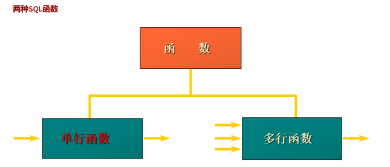
单行函数 ：
- 操作数据对象
- 接受参数返回一个结果
- 只对一行进行变换
- 每行返回一个结果
- 可以嵌套
- 参数可以是一列或一个值
2. 数值函数
2.1 基本函数
| 函数 | 用法 |
|---|---|
| ABS(x) | 返回x绝对值 |
| SIGN(x) | 返回x的符号，正数为1、负数为-1、0返回0 |
| PI() | 返回圆周率的值 |
| CEIL(x) | 返回大于或等于某个值的最小整数 |
| FLOOR(x) | 地板函数 |
| LEAST(x,y,z) | 返回最小值 |
| GREATEST(x,y,z) | 返回最大值 |
| MOD(x,y) | 返回x除以y后的余数 |
| RAND() | 返回0~1的随机值 |
| RAND(x) | 返回0~1之间的伪随机数，x为种子数 |
| ROUND(x) | x四舍五入 |
| ROUND(x,y) | x四舍五入，保留y位小数 |
| TRUNCATE(x,y) | 返回数字x截断为y小数的结果 |
| SQRT(x) | x开根号 |
举例
SELECT
ABS(-123),ABS(32),SIGN(-23),SIGN(43),PI(),CEIL(32.32),CEILING(-43.23),FLOOR(32.32),
FLOOR(-43.23),MOD(12,5)
FROM DUAL;
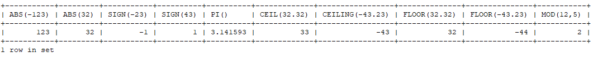
SELECT RAND(),RAND(),RAND(10),RAND(10),RAND(-1),RAND(-1)
FROM DUAL;
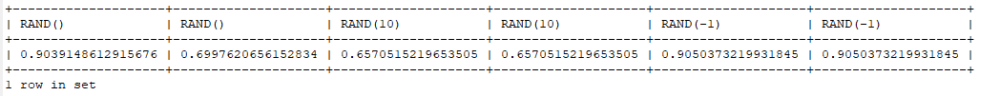
SELECT
ROUND(12.33),ROUND(12.343,2),ROUND(12.324,-1),TRUNCATE(12.66,1),TRUNCATE(12.66,-1)
FROM DUAL;
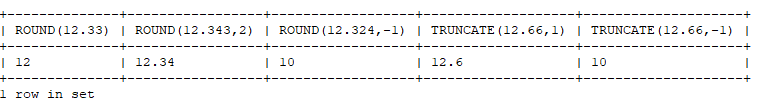
2.2 角度与弧度互换函数
| 函数 | 用法 |
|---|---|
| RADIANS(x) | 将角度转化为弧度，其中x为角度值 |
| DEGREES(x) | 将弧度转化为角度，其中x为弧度值 |
SELECT RADIANS(30),RADIANS(60),RADIANS(90),DEGREES(2*PI()),DEGREES(RADIANS(90))
FROM DUAL;
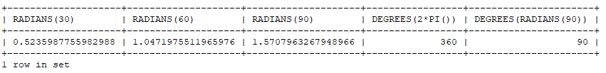
2.3 三角函数
| 函数 | 用法 |
|---|---|
| SIN(x) | 返回x的正弦值，x为弧度 |
| ASIN(x) | 返回x的反正弦值，x为弧度；x不在-1到1之间，返回null |
| COS(x) | 返回x的余弦值，x为弧度 |
| ACOS(x) | 返回x的反余弦值，x为弧度；x不在-1到1之间，返回null |
| TAN(x) | 返回x的正切值，x为弧度 |
| ATAN(x) | 返回x的反正切值 |
| ATAN2(m,n) | 返回两个参数的反正切值 |
| COT(x) | 返回x的余切值，其中x为弧度值 |
举例：
ATAN2(M,N)函数返回两个参数的反正切值。 与ATAN(X)函数相比，ATAN2(M,N)需要两个参数，例如有两个 点point(x1,y1)和point(x2,y2)，使用ATAN(X)函数计算反正切值为ATAN((y2-y1)/(x2-x1))，使用ATAN2(M,N)计 算反正切值则为ATAN2(y2-y1,x2-x1)。由使用方式可以看出，当x2-x1等于0时，ATAN(X)函数会报错，而 ATAN2(M,N)函数则仍然可以计算。
ATAN2(M,N)函数的使用示例如下：
SELECT
SIN(RADIANS(30)),DEGREES(ASIN(1)),TAN(RADIANS(45)),DEGREES(ATAN(1)),DEGREES(ATAN2(1,1)
)
FROM DUAL;
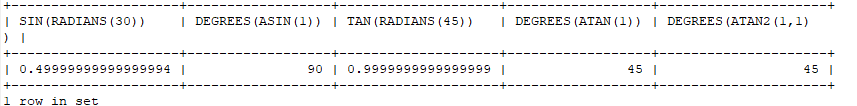
2.4 指数和对数
| 函数 | 说明 |
|---|---|
| POW(x,y) | 返回x的y次方 |
| EXP(x) | 返回e的x次方 |
| LN(x) | 返回以e为底x的对数，x<=0时，返回结果为null |
| LOG10(x) | 返回以10为底的x的对数，x<=0时，返回结果为null |
| LOG2(x) | 返回以2为底的x的对数，x<=0时，返回结果为null |
SELECT POW(2,5),POWER(2,4),EXP(2),LN(10),LOG10(10),LOG2(4)
FROM DUAL;
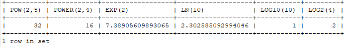
2.5 进制间的转换
| 函数 | 说明 |
|---|---|
| BIN(x) | 返回x的二进制编码 |
| HEX(x) | 返回x的十六进制编码 |
| OCT(x) | 返回x的八进制编码 |
| CONV(f1，x，f2) | 返回f1进制的x转换为f2进制数 |
SELECT BIN(10),HEX(10),OCT(10),CONV(10,2,8)
FROM DUAL;
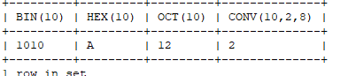
3.字符串函数
| 函数 | 说明 |
|---|---|
| ASCII(s) | 返回字符串s的ASCII码 |
| CHAR_LENGTH(s) | 返回字符串s的字符数 |
| LENGTH(s) | 返回字符串的字节数，与字符集相关 |
| CONCAT(s1,s2,s3) | 返回s1，s2，s3连接后的字符串 |
| CONCAT_WS(x,s1,s2,s3) | 返回s1，s2，s3连接后的字符串，字符串之间用x相连接 |
| INSERT(str，idx，len，replacestr) | 将字符串str从idx位置开始，len个字符长的字串替换为字符串replacestr |
| REPLACE(str, a, b) | 用字符串b替换字符串str中所有出现的字符串b |
| UPPER(s) | 将字符串s的所有字母转成大写字母 |
| LOWER(s) | 将字符串s的所有字母转成小写字母 |
| LEFT(str,n) | 返回字符串str最左边的n个字符 |
| RIGHT(str,n) | 返回字符串str最右边的n个字符 |
| LPAD(str, len, pad) | 用字符串pad对str最左边进行填充，直到str的长度为len个字符 |
| RPAD(str ,len, pad) | 用字符串pad对str最右边进行填充，直到str的长度为len个字符 |
| LTRIM(s) | 去掉字符串s左侧的空格 |
| RTRIM(s) | 去掉字符串s右侧的空格 |
| TRIM(s) | 去掉字符串s开始与结尾的空格 |
| TRIM(s1 FROM s) | 去掉字符串s开始与结尾的s1 |
| TRIM(LEADING s1 FROM s) | 去掉字符串s开始处的s1 |
| TRIM(TRAILING s1 FROM s) | 去掉字符串s结尾处的s1 |
| REPEAT(str, n) | 返回str重复n次的结果 |
| SPACE(n) | 返回n个空格 |
| STRCMP(s1,s2) | 比较字符串s1,s2的ASCII码值的大小 |
| SUBSTR(s,index,len) | 返回从字符串s的index位置其len个字符，作用与SUBSTRING(s,n,len)、 MID(s,n,len)相同 |
| LOCATE(substr,str) | 返回字符串substr在字符串str中首次出现的位置，作用于POSITION(substr IN str)、INSTR(str,substr)相同。未找到，返回0 |
| ELT(m,s1,s2,…,sn) | 返回指定位置的字符串，如果m=1，则返回s1，如果m=2，则返回s2，如 果m=n，则返回sn |
| FIELD(s,s1,s2,…,sn) | 返回字符串s在字符串列表中第一次出现的位置 |
| FIND_IN_SET(s1,s2) | 返回字符串s1在字符串s2中出现的位置。其中，字符串s2是一个以逗号分 隔的字符串 |
| REVERSE(s) | 返回s反转后的字符串 |
| NULLIF(value1,value2) | 比较两个字符串，如果value1与value2相等，则返回NULL，否则返回 value1 |
注意：MySQL中，字符串的位置是从1开始的。
4.日期和时间函数
4.1 获取日期、时间
| 函数 | 说明 |
|---|---|
| CURDATE() ，CURRENT_DATE() | 返回当前日期，只包含年、 月、日 |
| CURTIME() ， CURRENT_TIME() | 返回当前时间，只包含时、 分、秒 |
| NOW() / SYSDATE() / CURRENT_TIMESTAMP() / LOCALTIME() / LOCALTIMESTAMP() | 返回当前系统日期和时间 |
| UTC_DATE() | 返回UTC（世界标准时间） 日期 |
| UTC_TIME() | 返回UTC（世界标准时间） 时间 |
SELECT CURDATE(),CURTIME(),NOW(),SYSDATE()+0,UTC_DATE(),UTC_DATE()+0,UTC_TIME(),UTC_TIME()+0
FROM DUAL;
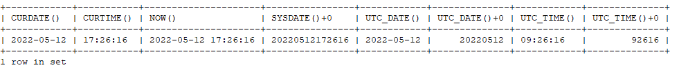
4.2 日期与时间戳的转换
| 函数 | 说明 |
|---|---|
| UNIX_TIMESTAMP() | 以UNIX时间戳的形式返回当前时间。SELECT UNIX_TIMESTAMP() - >1634348884 |
| UNIX_TIMESTAMP(date) | 将时间date以UNIX时间戳的形式返回。 |
| FROM_UNIXTIME(timestamp) | 将UNIX时间戳的时间转换为普通格式的时间 |
SELECT FROM_UNIXTIME(1576380910);
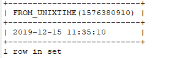
4.3 获取月份、星期、星期数、天数等函数
| 函数 | 说明 |
|---|---|
| YEAR(date) / MONTH(date) / DAY(date) | 返回具体的日期值 |
| HOUR(time) / MINUTE(time) / SECOND(time) | 返回具体的时间值 |
| MONTHNAME(date) | 返回月份：January，… |
| DAYNAME(date) | 返回星期几：MONDAY，TUESDAY…..SUNDAY |
| WEEKDAY(date) | 返回周几，注意，周1是0，周2是1，。。。周日是6 |
| QUARTER(date) | 返回日期对应的季度，范围为1～4 |
| WEEKOFYEAR(date) | 返回一年中的第几周 |
| DAYOFYEAR(date) | 返回日期是一年中的第几天 |
| DAYOFMONTH(date) | 返回日期位于所在月份的第几天 |
| DAYOFWEEK(date) | 返回周几，注意：周日是1，周一是2，。。。周六是 7 |
SELECT YEAR(CURDATE()),MONTH(CURDATE()),DAY(CURDATE()),
HOUR(CURTIME()),MINUTE(NOW()),SECOND(SYSDATE())
FROM DUAL;
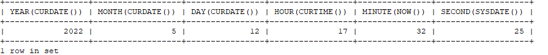
SELECT MONTHNAME('2021-10-26'),DAYNAME('2021-10-26'),WEEKDAY('2021-10-26'),
QUARTER(CURDATE()),WEEK(CURDATE()),DAYOFYEAR(NOW()),
DAYOFMONTH(NOW()),DAYOFWEEK(NOW())
FROM DUAL;
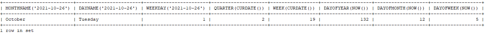
4.4 日期的操作函数
| 函数 | 说明 |
|---|---|
| EXTRACT(type FROM date) | 返回指定日期中特定的部分，type指定返回的值 |
EXTRACT(type FROM date)函数中type的取值与含义：
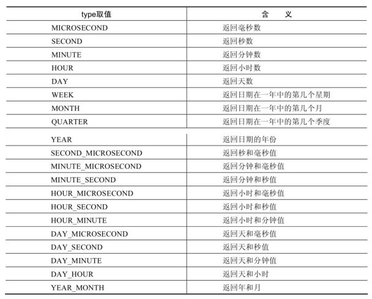
SELECT EXTRACT(MINUTE FROM NOW()),EXTRACT( WEEK FROM NOW()),
EXTRACT( QUARTER FROM NOW()),EXTRACT( MINUTE_SECOND FROM NOW())
FROM DUAL;
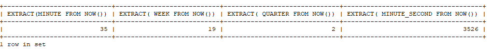
4.5 时间和秒钟转换的函数
| 函数 | 说明 |
|---|---|
| TIME_TO_SEC(time) | 将 time 转化为秒并返回结果值。转化的公式为： 小时*3600+分钟 *60+秒 |
| SEC_TO_TIME(seconds) | 将 seconds 描述转化为包含小时、分钟和秒的时间 |
SELECT TIME_TO_SEC(NOW());
SELECT SEC_TO_TIME(78774);
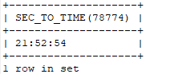
4.6 计算日期和时间的函数
| 函数 | 说明 |
|---|---|
| DATE_ADD(datetime, INTERVAL expr type)， ADDDATE(date,INTERVAL expr type） | 返回与给定日期时间相差INTERVAL时 间段的日期时间 |
| DATE_SUB(date,INTERVAL expr type)， SUBDATE(date,INTERVAL expr type) | 返回与date相差INTERVAL时间间隔的 日期 |
上述函数中type的取值：
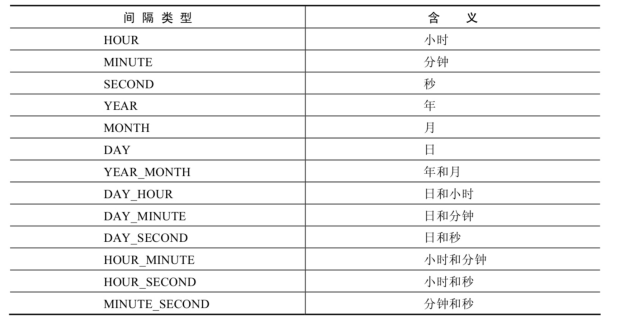
SELECT DATE_ADD(NOW(), INTERVAL 1 DAY) AS col1,
DATE_ADD('2021-10-21 23:32:12',INTERVAL 1 SECOND) AS col2,
DATE_ADD('2021-10-21 23:32:12',INTERVAL 1 SECOND) AS col3,
DATE_ADD('2021-10-21 23:32:12',INTERVAL '1_1' MINUTE_SECOND) AS col4,
DATE_ADD(NOW(), INTERVAL -1 YEAR) AS col5, #可以是负数
DATE_ADD(NOW(), INTERVAL '1_1' YEAR_MONTH) AS col6 #需要单引号
FROM DUAL;
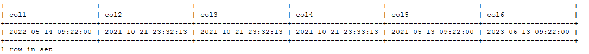
SELECT DATE_SUB('2021-01-21',INTERVAL 31 DAY) AS col1,
SUBDATE('2021-01-21',INTERVAL 31 DAY) AS col2,
DATE_SUB('2021-01-21 02:01:01',INTERVAL '1 1' DAY_HOUR) AS col3
FROM DUAL;
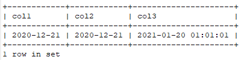
| 函数 | 说明 |
|---|---|
| ADDTIME(time1,time2) | 返回time1加上time2的时间。当time2为一个数字时，代表的是 秒 ，可以为负数 |
| SUBTIME(time1,time2) | 返回time1减去time2后的时间。当time2为一个数字时，代表的 是 秒 ，可以为负数 |
| DATEDIFF(date1,date2) | 返回date1 - date2的日期间隔天数 |
| TIMEDIFF(time1, time2) | 返回time1 - time2的时间间隔 |
| FROM_DAYS(N） | 返回从0000年1月1日起，N天以后的日期 |
| TO_DAYS(date) | 返回日期date距离0000年1月1日的天数 |
| LAST_DAY(date) | 返回date所在月份的最后一天的日期 |
| MAKEDATE(year,n) | 针对给定年份与所在年份中的天数返回一个日期 |
| MAKETIME(hour,minute,second) | 将给定的小时、分钟和秒组合成时间并返回 |
| PERIOD_ADD(time,n) | 返回time加上n后的时间 |
SELECT
ADDTIME(NOW(),20),SUBTIME(NOW(),30),SUBTIME(NOW(),'1:1:3'),
DATEDIFF(NOW(),'2021-10-01'),
TIMEDIFF(NOW(),'2021-10-25 22:10:10'),
FROM_DAYS(366),
TO_DAYS('0000-12-25'),
LAST_DAY(NOW()),
MAKEDATE(YEAR(NOW()),12),
MAKETIME(10,21,23),
PERIOD_ADD(20200101010101,10)
FROM DUAL;
SELECT ADDTIME(NOW(), 50);
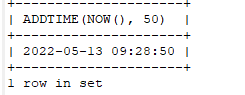
mysql> SELECT SUBTIME(NOW(), '1:1:1');
+-------------------------+
| SUBTIME(NOW(), '1:1:1') |
+-------------------------+
| 2019-12-15 21:23:50 |
+-------------------------+
1 row in set (0.00 sec)
mysql> SELECT SUBTIME(NOW(), '-1:-1:-1');
+----------------------------+
| SUBTIME(NOW(), '-1:-1:-1') |
+----------------------------+
| 2019-12-15 22:25:11 |
+----------------------------+
1 row in set, 1 warning (0.00 sec)
mysql> SELECT FROM_DAYS(366);
+----------------+
| FROM_DAYS(366) |
+----------------+
| 0001-01-01 |
+----------------+
1 row in set (0.00 sec)
mysql> SELECT MAKEDATE(2020,1);
+------------------+
| MAKEDATE(2020,1) |
+------------------+
| 2020-01-01 |
+------------------+
1 row in set (0.00 sec)
mysql> SELECT MAKEDATE(2020,32);
+-------------------+
| MAKEDATE(2020,32) |
+-------------------+
| 2020-02-01 |
+-------------------+
1 row in set (0.00 sec)
mysql> SELECT MAKETIME(1,1,1);
+-----------------+
| MAKETIME(1,1,1) |
+-----------------+
| 01:01:01 |
+-----------------+
1 row in set (0.00 sec)
mysql> SELECT PERIOD_ADD(20200101010101,1);
+------------------------------+
| PERIOD_ADD(20200101010101,1) |
+------------------------------+
| 20200101010102 |
+------------------------------+
1 row in set (0.00 sec)
mysql> SELECT TO_DAYS(NOW());
+----------------+
| TO_DAYS(NOW()) |
+----------------+
| 737773 |
+----------------+
1 row in set (0.00 sec)
举例：查询 7 天内的新增用户数有多少？
SELECT COUNT(*) as num FROM new_user WHERE TO_DAYS(NOW())-TO_DAYS(regist_time)<=7
4.7 日期的格式化与解析
| 函数 | 说明 |
|---|---|
| DATE_FORMAT(date,fmt) | 按照字符串fmt格式化日期date值 |
| TIME_FORMAT(time,fmt) | 按照字符串fmt格式化时间time值 |
| GET_FORMAT(date_type,format_type | 返回日期字符串的显示格式 |
| STR_TO_DATE(str, fmt) | 按照字符串fmt对str进行解析，解析为一个日期 |
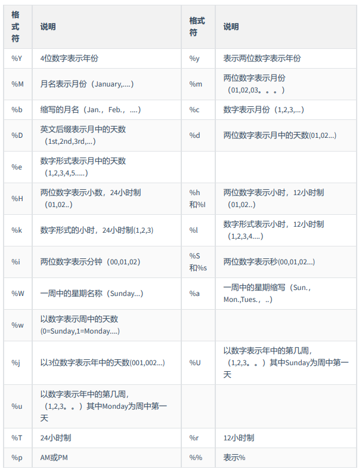
GET_FORMAT函数中date_type和format_type参数取值如下：
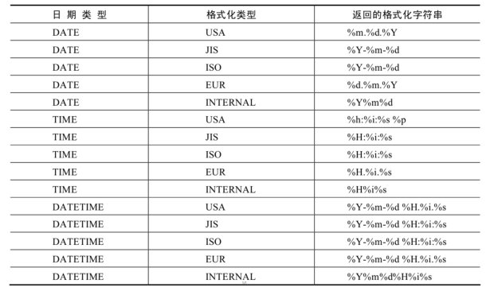
mysql> SELECT DATE_FORMAT(NOW(), '%H:%i:%s');
+--------------------------------+
| DATE_FORMAT(NOW(), '%H:%i:%s') |
+--------------------------------+
| 22:57:34 |
+--------------------------------+
1 row in set (0.00 sec)
SELECT STR_TO_DATE('09/01/2009','%m/%d/%Y')
FROM DUAL;
SELECT STR_TO_DATE('20140422154706','%Y%m%d%H%i%s')
FROM DUAL;
SELECT STR_TO_DATE('2014-04-22 15:47:06','%Y-%m-%d %H:%i:%s')
FROM DUAL;
mysql> SELECT GET_FORMAT(DATE, 'USA');
+-------------------------+
| GET_FORMAT(DATE, 'USA') |
+-------------------------+
| %m.%d.%Y |
+-------------------------+
1 row in set (0.00 sec)
SELECT DATE_FORMAT(NOW(),GET_FORMAT(DATE,'USA')),
FROM DUAL;
mysql> SELECT STR_TO_DATE('2020-01-01 00:00:00','%Y-%m-%d');
+-----------------------------------------------+
| STR_TO_DATE('2020-01-01 00:00:00','%Y-%m-%d') |
+-----------------------------------------------+
| 2020-01-01 |
+-----------------------------------------------+
1 row in set, 1 warning (0.00 sec)
5. 流程控制函数
流程处理函数可以根据不同的条件，执行不同的处理流程，可以在SQL语句中实现不同的条件选择。 MySQL中的流程处理函数主要包括IF()、IFNULL()和CASE()函数。
| 函数 | 说明 |
|---|---|
| IF(value,value1,value2) | 如果value的值为TRUE，返回value1， 否则返回value2 |
| IFNULL(value1, value2) | 如果value1不为NULL，返回value1，否 则返回value2 |
| CASE WHEN 条件1 THEN 结果1 WHEN 条件2 THEN 结果2 …. [ELSE resultn] END | 相当于Java的if…else if…else… |
| CASE expr WHEN 常量值1 THEN 值1 WHEN 常量值1 THEN 值1 …. [ELSE 值n] END | 相当于Java的switch…case… |
SELECT IF(1 > 0,'正确','错误')
->正确
SELECT IFNULL(null,'Hello Word')
->Hello Word
SELECT CASE
WHEN 1 > 0
THEN '1 > 0'
WHEN 2 > 0
THEN '2 > 0'
ELSE '3 > 0'
END
->1 > 0
SELECT CASE 1
WHEN 1 THEN '我是1'
WHEN 2 THEN '我是2'
ELSE '你是谁'
SELECT employee_id,salary, CASE WHEN salary>=15000 THEN '高薪'
WHEN salary>=10000 THEN '潜力股'
WHEN salary>=8000 THEN '屌丝'
ELSE '草根' END "描述"
FROM employees;
SELECT oid,`status`, CASE `status` WHEN 1 THEN '未付款'
WHEN 2 THEN '已付款'
WHEN 3 THEN '已发货'
WHEN 4 THEN '确认收货'
ELSE '无效订单' END
FROM t_order;
SELECT CASE WHEN 1 > 0 THEN 'yes' WHEN 1 <= 0 THEN 'no' ELSE 'unknown' END;
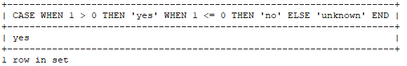
SELECT CASE WHEN 1 < 0 THEN 'yes' WHEN 1 = 0 THEN 'no' ELSE 'unknown' END;
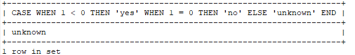
SELECT CASE 1 WHEN 0 THEN 0 WHEN 1 THEN 1 ELSE -1 END;
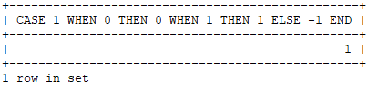
mysql> SELECT CASE -1 WHEN 0 THEN 0 WHEN 1 THEN 1 ELSE -1 END;
+-------------------------------------------------+
| CASE -1 WHEN 0 THEN 0 WHEN 1 THEN 1 ELSE -1 END |
+-------------------------------------------------+
| -1 |
+-------------------------------------------------+
1 row in set (0.00 sec)
SELECT employee_id,12 * salary * (1 + IFNULL(commission_pct,0))
FROM employees;
SELECT last_name, job_id, salary,
CASE job_id WHEN 'IT_PROG' THEN 1.10*salary
WHEN 'ST_CLERK' THEN 1.15*salary
WHEN 'SA_REP' THEN 1.20*salary
ELSE salary END "REVISED_SALARY"
FROM employees;
6. 加密与解密函数
加密与解密函数主要用于对数据库中的数据进行加密和解密处理，以防止数据被他人窃取。这些函数在 保证数据库安全时非常有用。(一般不在数据库加密，了解一下)
| 函数 | 代码块 |
|---|---|
| PASSWORD(str） | 【这个函数Mysql8.0没有了】返回字符串str的加密版本，41位长的字符串。加密结果 不可 逆 ，常用于用户的密码加密 |
| MD5(str) | 返回字符串str的md5加密后的值，也是一种加密方式。若参数为 NULL，则会返回NULL |
| SHA(str) | 从原明文密码str计算并返回加密后的密码字符串，当参数为 NULL时，返回NULL。 SHA加密算法比MD5更加安全 。 |
| ENCODE(value,password_seed) | 【这个函数Mysql8.0没有了】返回使用password_seed作为加密密码加密value |
| DECODE(value,password_seed) | 【这个函数Mysql8.0没有了】返回使用password_seed作为加密密码解密value |
可以看到，ENCODE(value,password_seed)函数与DECODE(value,password_seed)函数互为反函数。
SELECT PASSWORD('mysql'), PASSWORD(NULL);
SELECT MD5('AAA') ,SHA('BBB') FROM DUAL;
+----------------------------------+------------------------------------------+
| MD5('AAA') | SHA('BBB') |
+----------------------------------+------------------------------------------+
| e1faffb3e614e6c2fba74296962386b7 | aa6878b1c31a9420245df1daffb7b223338737a3 |
+----------------------------------+------------------------------------------+
7. MySQL信息函数
MySQL中内置了一些可以查询MySQL信息的函数，这些函数主要用于帮助数据库开发或运维人员更好地 对数据库进行维护工作。
| 函数 | 说明 |
|---|---|
| VERSION() | 返回当前MySQL的版本号 |
| CONNECTION_ID() | 返回当前MySQL服务器的连接数 |
| DATABASE()，SCHEMA() | 返回MySQL命令行当前所在的数据库 |
| USER()，CURRENT_USER()、SYSTEM_USER()， SESSION_USER() | 返回当前连接MySQL的用户名，返回结果格式为 “主机名@用户名” |
| CHARSET(value) | 返回字符串value自变量的字符集 |
| COLLATION(value) | 返回字符串value的比较规则 |
SELECT DATABASE();
+------------+
| DATABASE() |
+------------+
| atguigudb |
+------------+
1 row in set
mysql> SELECT USER(), CURRENT_USER(), SYSTEM_USER(),SESSION_USER();
+----------------+----------------+----------------+----------------+
| USER() | CURRENT_USER() | SYSTEM_USER() | SESSION_USER() |
+----------------+----------------+----------------+----------------+
| root@localhost | root@localhost | root@localhost | root@localhost |
+----------------+----------------+----------------+----------------+
1 row in set
mysql> SELECT CHARSET('ABC');
+----------------+
| CHARSET('ABC') |
+----------------+
| utf8mb3 |
+----------------+
1 row in set
mysql> SELECT COLLATION('ABC');
+------------------+
| COLLATION('ABC') |
+------------------+
| utf8_general_ci |
+------------------+
1 row in set
8. 其他函数
MySQL中有些函数无法对其进行具体的分类，但是这些函数在MySQL的开发和运维过程中也是不容忽视 的。
| 函数 | 说明 |
|---|---|
| FORMAT(value,n) | 返回对数字value进行格式化后的结果数据。n表示 四舍五入 后保留 到小数点后n位 |
| CONV(value,from,to) | 将value的值进行不同进制之间的转换 |
| INET_ATON(ipvalue) | 将以点分隔的IP地址转化为一个数字 |
| INET_NTOA(value) | 将数字形式的IP地址转化为以点分隔的IP地址 |
| BENCHMARK(n,expr) | 将表达式expr重复执行n次。用于测试MySQL处理expr表达式所耗费 的时间 |
| CONVERT(value USING char_code) | 将value所使用的字符编码修改为char_code |
mysql> SELECT FORMAT(123.123, 2), FORMAT(123.523, 0), FORMAT(123.123, -2);
+--------------------+--------------------+---------------------+
| FORMAT(123.123, 2) | FORMAT(123.523, 0) | FORMAT(123.123, -2) |
+--------------------+--------------------+---------------------+
| 123.12 | 124 | 123 |
+--------------------+--------------------+---------------------+
1 row in set
mysql> SELECT CONV(16, 10, 2), CONV(8888,10,16), CONV(NULL, 10, 2);
+-----------------+------------------+-------------------+
| CONV(16, 10, 2) | CONV(8888,10,16) | CONV(NULL, 10, 2) |
+-----------------+------------------+-------------------+
| 10000 | 22B8 | NULL |
+-----------------+------------------+-------------------+
1 row in set
mysql> SELECT INET_ATON('192.168.1.100');
+----------------------------+
| INET_ATON('192.168.1.100') |
+----------------------------+
| 3232235876 |
+----------------------------+
1 row in set
# 以“192.168.1.100”为例，计算方式为192乘以256的3次方，加上168乘以256的2次方，加上1乘以256，再加上100。
mysql> SELECT INET_NTOA(3232235876);
+-----------------------+
| INET_NTOA(3232235876) |
+-----------------------+
| 192.168.1.100 |
+-----------------------+
1 row in set
# 函数执行n次所需要的时间
mysql> SELECT BENCHMARK(1, MD5('mysql'));
+----------------------------+
| BENCHMARK(1, MD5('mysql')) |
+----------------------------+
| 0 |
+----------------------------+
1 row in set
mysql> SELECT CHARSET('mysql'), CHARSET(CONVERT('mysql' USING 'utf8'));
+------------------+----------------------------------------+
| CHARSET('mysql') | CHARSET(CONVERT('mysql' USING 'utf8')) |
+------------------+----------------------------------------+
| utf8mb3 | utf8mb3 |
+------------------+----------------------------------------+
1 row in set
9. 课后练习
- 显示系统时间
SELECT NOW()
FROM DUAL;
+---------------------+
| NOW() |
+---------------------+
| 2022-05-13 10:18:08 |
+---------------------+
1 row in set
- 显示员工号，姓名，工资以及工资提高20%后的结果
SELECT employee_id,last_name,salary,salary*1.2 "new salary"
FROM employees;
+-------------+-------------+--------+------------+
| employee_id | last_name | salary | new salary |
+-------------+-------------+--------+------------+
| 100 | King | 24000 | 28800.00 |
| 101 | Kochhar | 17000 | 20400.00 |
| 102 | De Haan | 17000 | 20400.00 |
| 103 | Hunold | 9000 | 10800.00 |
| 104 | Ernst | 6000 | 7200.00 |
| 105 | Austin | 4800 | 5760.00 |
| 106 | Pataballa | 4800 | 5760.00 |
| 107 | Lorentz | 4200 | 5040.00 |
| 108 | Greenberg | 12000 | 14400.00 |
| 109 | Faviet | 9000 | 10800.00 |
| 110 | Chen | 8200 | 9840.00 |
| 111 | Sciarra | 7700 | 9240.00 |
| 112 | Urman | 7800 | 9360.00 |
| 113 | Popp | 6900 | 8280.00 |
| 114 | Raphaely | 11000 | 13200.00 |
| 115 | Khoo | 3100 | 3720.00 |
| 116 | Baida | 2900 | 3480.00 |
| 117 | Tobias | 2800 | 3360.00 |
| 118 | Himuro | 2600 | 3120.00 |
| 119 | Colmenares | 2500 | 3000.00 |
- 将员工的姓名按首字母排序，并写出姓名的长度
SELECT last_name,LENGTH(last_name) "name_length"
FROM employees
ORDER BY name_length ASC;
+-------------+-------------+
| last_name | name_length |
+-------------+-------------+
| Gee | 3 |
| Seo | 3 |
| Lee | 3 |
| Fox | 3 |
| Fay | 3 |
| King | 4 |
| Chen | 4 |
| Popp | 4 |
| Khoo | 4 |
| Rajs | 4 |
| Hall | 4 |
| King | 4 |
| Ande | 4 |
| Ozer | 4 |
| Abel | 4 |
| Bull | 4 |
| Bell | 4 |
| Baer | 4 |
| Ernst | 5 |
| Urman | 5 |
| Baida | 5 |
| Weiss | 5 |
| Fripp | 5 |
| Nayer | 5 |
| Olson | 5 |
| Patel | 5 |
| Matos | 5 |
- 查询员工id，last_name,salary,并作为一个列输出，别名为OUT_PUT
SELECT CONCAT(employee_id ,",", last_name,",",salary) "OUT_PUT"
FROM employees;
+-------------------------+
| OUT_PUT |
+-------------------------+
| 100,King,24000.00 |
| 101,Kochhar,17000.00 |
| 102,De Haan,17000.00 |
| 103,Hunold,9000.00 |
| 104,Ernst,6000.00 |
| 105,Austin,4800.00 |
| 106,Pataballa,4800.00 |
| 107,Lorentz,4200.00 |
| 108,Greenberg,12000.00 |
| 109,Faviet,9000.00 |
| 110,Chen,8200.00 |
| 111,Sciarra,7700.00 |
| 112,Urman,7800.00 |
| 113,Popp,6900.00 |
| 114,Raphaely,11000.00 |
| 115,Khoo,3100.00 |
| 116,Baida,2900.00 |
| 117,Tobias,2800.00 |
| 118,Himuro,2600.00 |
| 119,Colmenares,2500.00 |
| 120,Weiss,8000.00 |
| 121,Fripp,8200.00 |
- 查询公司各员工的工作年数、工作天数，并按工作年数降序排列
SELECT employee_id ,DATEDIFF(NOW(),hire_date)/365 "worked_years" ,DATEDIFF(NOW(),hire_date) "worked_days"
FROM employees
ORDER BY worked_years DESC;
+-------------+--------------+-------------+
| employee_id | worked_years | worked_days |
+-------------+--------------+-------------+
| 100 | 34.9288 | 12749 |
| 200 | 34.6767 | 12657 |
| 101 | 32.663 | 11922 |
| 103 | 32.3781 | 11818 |
| 104 | 31 | 11315 |
| 102 | 29.3479 | 10712 |
| 203 | 27.9507 | 10202 |
| 204 | 27.9507 | 10202 |
| 205 | 27.9507 | 10202 |
| 206 | 27.9507 | 10202 |
| 109 | 27.7589 | 10132 |
| 108 | 27.7562 | 10131 |
| 114 | 27.4493 | 10019 |
| 122 | 27.0521 | 9874 |
| 115 | 27.0055 | 9857 |
| 137 | 26.8493 | 9800 |
| 141 | 26.589 | 9705 |
| 184 | 26.3096 | 9603 |
查询员工姓名，hire_date，department_id,满足以下条件：
雇佣时间在1997年之后，department_id为80,90或100，commission_pct不为空
SELECT last_name,hire_date,department_id
FROM employees
WHERE department_id IN (80,90,100)
AND commission_pct IS NOT NULL
AND hire_date >='1997-01-01';
+------------+------------+---------------+
| last_name | hire_date | department_id |
+------------+------------+---------------+
| Partners | 1997-01-05 | 80 |
| Errazuriz | 1997-03-10 | 80 |
| Cambrault | 1999-10-15 | 80 |
| Zlotkey | 2000-01-29 | 80 |
| Tucker | 1997-01-30 | 80 |
| Bernstein | 1997-03-24 | 80 |
| Hall | 1997-08-20 | 80 |
| Olsen | 1998-03-30 | 80 |
| Cambrault | 1998-12-09 | 80 |
| Tuvault | 1999-11-23 | 80 |
| Smith | 1997-03-10 | 80 |
| Doran | 1997-12-15 | 80 |
| Sewall | 1998-11-03 | 80 |
| Vishney | 1997-11-11 | 80 |
| Greene | 1999-03-19 | 80 |
| Marvins | 2000-01-24 | 80 |
| Lee | 2000-02-23 | 80 |
| Ande | 2000-03-24 | 80 |
| Banda | 2000-04-21 | 80 |
| Ozer | 1997-03-11 | 80 |
| Bloom | 1998-03-23 | 80 |
| Fox | 1998-01-24 | 80 |
| Smith | 1999-02-23 | 80 |
| Bates | 1999-03-24 | 80 |
| Kumar | 2000-04-21 | 80 |
| Hutton | 1997-03-19 | 80 |
| Taylor | 1998-03-24 | 80 |
| Livingston | 1998-04-23 | 80 |
| Johnson | 2000-01-04 | 80 |
+------------+------------+---------------+
29 rows in set
- 查询公司中入职超过10000天的员工姓名、入职时间
SELECT last_name,hire_date
FROM employees
WHERE DATEDIFF(NOW(),hire_date) >= 10000;
+-----------+------------+
| last_name | hire_date |
+-----------+------------+
| King | 1987-06-17 |
| Kochhar | 1989-09-21 |
| De Haan | 1993-01-13 |
| Hunold | 1990-01-03 |
| Ernst | 1991-05-21 |
| Greenberg | 1994-08-17 |
| Faviet | 1994-08-16 |
| Raphaely | 1994-12-07 |
| Whalen | 1987-09-17 |
| Mavris | 1994-06-07 |
| Baer | 1994-06-07 |
| Higgins | 1994-06-07 |
| Gietz | 1994-06-07 |
+-----------+------------+
13 rows in set
- 做一个查询，产生下面的结果
<last_name>earns<salary> monthly but wants <salary*3>
SELECT CONCAT (last_name,' earns ',TRUNCATE(salary,0),' monthly but wants ',TRUNCATE(salary*3,0))
FROM employees;
+--------------------------------------------------------------------------------------------+
| CONCAT (last_name,' earns ',TRUNCATE(salary,0),' monthly but wants ',TRUNCATE(salary*3,0)) |
+--------------------------------------------------------------------------------------------+
| King earns 24000 monthly but wants 72000 |
| Kochhar earns 17000 monthly but wants 51000 |
| De Haan earns 17000 monthly but wants 51000 |
| Hunold earns 9000 monthly but wants 27000 |
| Ernst earns 6000 monthly but wants 18000 |
| Austin earns 4800 monthly but wants 14400 |
| Pataballa earns 4800 monthly but wants 14400 |
| Lorentz earns 4200 monthly but wants 12600 |
| Greenberg earns 12000 monthly but wants 36000 |
| Faviet earns 9000 monthly but wants 27000 |
| Chen earns 8200 monthly but wants 24600 |
| Sciarra earns 7700 monthly but wants 23100 |
| Urman earns 7800 monthly but wants 23400 |
- 使用case-when，按照下面的条件
JOB GRADE
AD_PRES A
ST_MAN B
IT_PROG C
SA_REP D
ST_CLERK E
得到如下结果
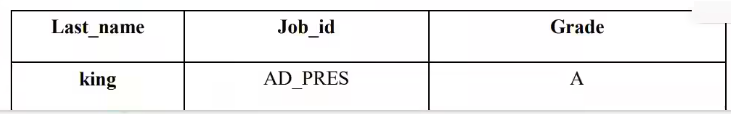
SELECT last_name "Last_name",job_id "Job_id", CASE job_id
WHEN 'AD_PRES' THEN 'A'
WHEN 'ST_MAN' THEN 'B'
WHEN 'IT_PROG' THEN 'C'
WHEN 'SA_REP' THEN 'D'
WHEN 'ST_CLERK' THEN 'E'
END "Grade"
FROM employees;
+-------------+------------+-------+
| Last_name | Job_id | Grade |
+-------------+------------+-------+
| King | AD_PRES | A |
| Kochhar | AD_VP | NULL |
| De Haan | AD_VP | NULL |
| Hunold | IT_PROG | C |
| Ernst | IT_PROG | C |
| Austin | IT_PROG | C |
| Pataballa | IT_PROG | C |
| Lorentz | IT_PROG | C |
| Greenberg | FI_MGR | NULL |
| Faviet | FI_ACCOUNT | NULL |
| Chen | FI_ACCOUNT | NULL |
| Sciarra | FI_ACCOUNT | NULL |
| Urman | FI_ACCOUNT | NULL |
| Popp | FI_ACCOUNT | NULL |
| Raphaely | PU_MAN | NULL |
| Khoo | PU_CLERK | NULL |